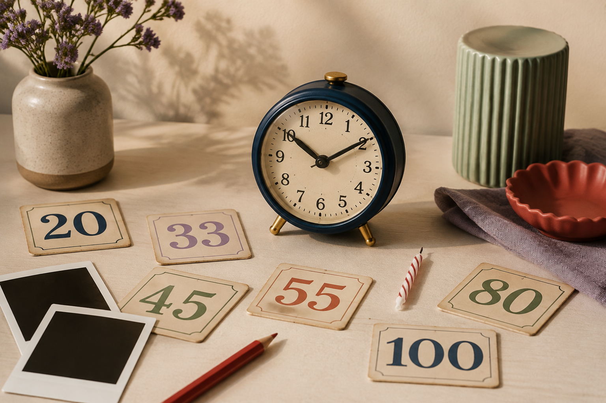

20–50
venti · trenta · quaranta · cinquanta中文：二十、三十、四十、五十
中文：你多大了？
练习从 20 到 100 的数字，并学习如何询问和说明年龄。

对应原课第 1、2 部分。
venti · trenta · quaranta · cinquanta中文：二十、三十、四十、五十
sessanta · settanta · ottanta · novanta · cento中文：六十、七十、八十、九十、一百
中文：我 33 岁。
Lei ha venticinque anni.中文：Sarah 25 岁。她 25 岁。
Lui ha ottant’anni.中文：Peter 80 岁。他 80 岁。
Lei ha tre anni.中文：Jen 3 岁。她 3 岁。
原课 15 轮对话；角色名只显示，不进入音频。
Insegnante: Ciao, Arisa.
Arisa: Ciao, signora Smith.
Insegnante: Quanti anni hai?
Arisa: Ho trentatré anni. E lei, signora Smith? Quanti anni ha?
Insegnante: Ho cinquantacinque anni.
Arisa: Anche suo marito ha cinquantacinque anni?
Insegnante: No. Ha cinquantasei anni. Quanti anni ha tuo marito?
Arisa: Ha quarant’anni.
Insegnante: Quanti anni hanno i tuoi figli?
Arisa: Mia figlia ha cinque anni. Mio figlio ne ha dieci. Quanti anni hanno i suoi figli?
Insegnante: Non ho figli.
Arisa: Ha fratelli o sorelle?
Insegnante: Sì, ho una sorella.
Arisa: Quanti anni ha?
Insegnante: Ha quarantacinque anni.
音频只朗读完整例句。
询问对方年龄。
中文：你多大了？
Quanti anni hai? Ho trentatré anni.询问第三人的年龄。
中文：他／她多大了？
Quanti anni ha? Ha quarantacinque anni.说明他人的年龄。
中文：他／她……岁。
Mio marito ha quarant’anni.询问多个人的年龄。
中文：他们多大了？
Quanti anni hanno i tuoi figli?Ascolta e ripeti i numeri da 20 a 100. Poi dì che cosa vedi: 31 · 46 · 72 · 99.
1. Quanti anni hai? — Ho ______.
2. Quanti anni ha Sarah? — Ha ______.
3. Quanti anni ha Jen? — Ha ______.
4. Quanti anni ha Peter? — Ha ______.
Leggi il dialogo precedente. Tu sei Arisa.
Insegnante: Quanti anni hai, Zach?
Zach: Ho ventitré ______. E tu, quanti anni ______?
Insegnante: Ho sessantacinque anni. Quanti anni hanno tua madre e tuo padre?
Zach: Mia madre ______ sessantacinque anni. ______ padre ne ha sessantatré.
Insegnante: Hai un fratello?
Zach: Sì. Mio ______ ha ventotto anni. Lei ha un fratello?
Insegnante: Sì.
Zach: ______ anni ha?
Insegnante: Ha settantotto anni.
Zach: Davvero? Wow!